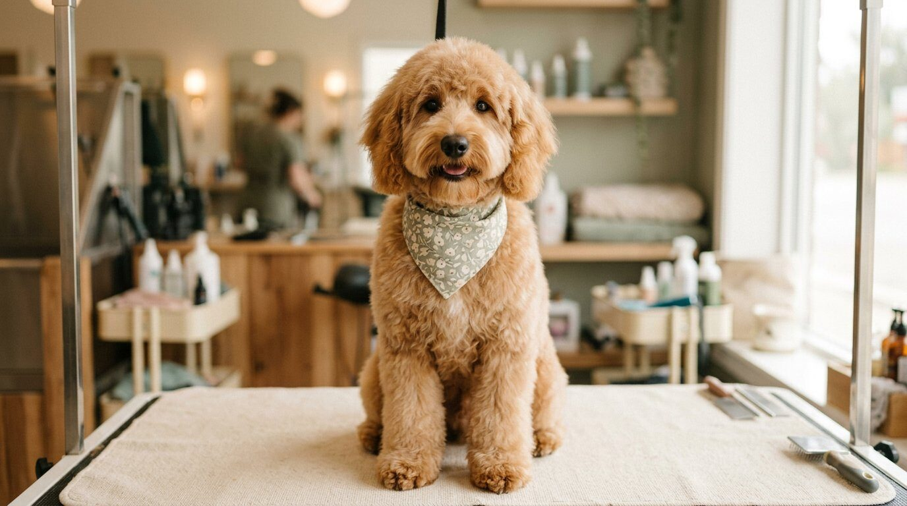
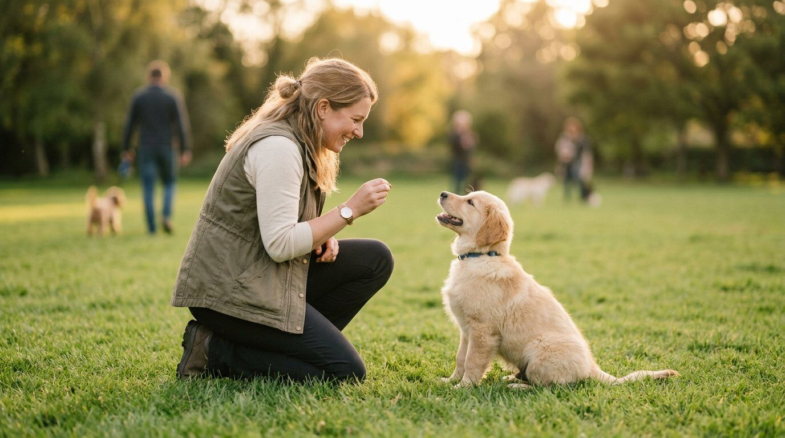
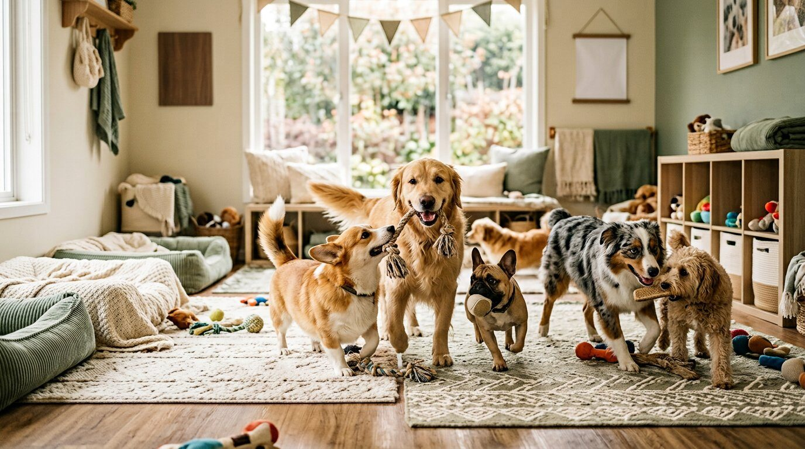

De juiste trimmer of trainer voor jouw hond, bij jou in de buurt.
Niet elke trimsalon kan elk ras en niet elke hondenschool past bij elke hond. Pupgids laat je filteren op ras, specialisatie en plaats, met echte reviews.

Een pomeriaan mag je nooit scheren. Een schnauzer moet je plukken.
Daarom kun je bij Pupgids filteren op ras. Zo vind je een trimmer die jouw hond écht kent, in plaats van eentje die alles "wel kan".
Weet je niet wat jouw hond nodig heeft? In de rassenwijzer zie je per ras het vachttype, de verzorging en een prijsindicatie.
Welk vachttype heeft jouw hond?
Drie korte vragen → persoonlijk verzorgingsadvies, hoe vaak en wat een trimbeurt kost.

Heb je een Pomeriaan? Nooit scheren.
De Pomeriaan heeft een dubbele vacht: een zachte ondervacht plus stuggere dekharen. Scheren kan blijvende schade geven — ontwollen en uitkammen is de juiste aanpak.
Complete gids met borstelschema, de "ugly fase", erkende kleuren en prijzen.
Lees de Pomeriaan-gids →Alles wat je hond nodig heeft, per plaats.

Trimsalon
Vergelijk trimsalons op ras, prijs en reviews. Zie welke salons plek hebben voor nieuwe honden en wie ervaring heeft met angstige honden.
Trimsalons bekijken
Hondenschool & training
Van puppycursus tot gedragstherapie bij angst of reactiviteit. Filter op specialisatie, trainingsmethode en certificering.
Hondenscholen bekijken
Pension & dagopvang
Vakantie of lange werkdagen? Vind opvang die past: kleine groepen, senioren, medicatie of juist geen groep.
Opvang bekijkenTrimsalons in Maastricht voor een labradoodle
Aanbevolen salons staan bovenaan. Daaronder alle salons in de buurt die dit ras doen, op afstand gesorteerd.
Voorbeeldsalon Wyck
Voorbeeldsalon Meerssen
Bovenstaande vermeldingen zijn voorbeelden van de opmaak en prijsniveaus.
In drie stappen naar de juiste match.
Kies plaats en ras
Vul in waar je woont en welk ras je hebt. Je ziet alleen aanbieders die bij jouw hond passen, binnen 20 kilometer.
Vergelijk op wat telt
Reviews, prijzen, specialisaties, of er plek is voor nieuwe honden. Geen verkooppraat, wel feiten.
Neem direct contact op
Vraag beschikbaarheid aan via de site of bel. De aanbieder reageert meestal binnen een dag.
Dit regel je in de eerste zes maanden.
De eerste maanden bepalen hoe je hond zich de rest van zijn leven gedraagt, en hoe zijn vacht eruit komt te zien. Wij zetten op een rij wat wanneer moet, en wie het bij jou in de buurt goed doet.
Bekijk het puppyplan →We starten in Limburg. Brabant volgt.
Staat jouw plaats er nog niet bij? Zoek gewoon; we tonen aanbieders binnen 20 kilometer.
Word gevonden door baasjes die nu een keuze maken.
Elke maand zoeken baasjes in jouw plaats naar een trimmer of trainer voor hun ras. Zorg dat jij bovenaan staat, met foto's, je specialisaties en een directe link naar je agenda.
- Gratis vermelding: claim je pagina en vul rassen, prijzen en foto's aan
- Premium: bovenaan in jouw plaats én op alle raspagina's
- Zie in je dashboard hoeveel mensen je pagina bekeken en wie contact zocht
- Opzegbaar per maand, geen commissie op klanten
- Aanbevolen-badge en positie bovenaan
- Tot 10 foto's, website- en Instagramlink
- Telefoonnummer direct klikbaar
- Zichtbaar op alle raspagina's in jouw plaats
- Maandelijks overzicht van weergaven en aanvragen
Eerste 10 salons en scholen per plaats. Daarna regulier tarief.
Drie manieren om gevonden te worden.
Start gratis, upgrade wanneer je het verschil wilt maken. Alles zonder commissie en maandelijks opzegbaar.
Gratis
Basis vermelding voor elke aanbieder
- Je pagina claimen en beheren
- 3 rassen & specialisaties
- 3 foto's
- Contactformulier
- Positie in de resultaten
Premium
Bovenaan in jouw plaats & op raspagina's
- Alles van Gratis
- Aanbevolen-badge & positie bovenaan
- Tot 10 foto's + sociale links
- Zichtbaar op alle raspagina's
- Maandelijks overzicht van weergaven
Eerste 10 per plaats, daarna regulier tarief.
Premium Plus
Maximale zichtbaarheid & direct boeken
- Alles van Premium
- Altijd #1 & uitgelicht
- 20 foto's + video
- Agenda & boekingen, zonder commissie
- Realtime dashboard + onboarding
| Wat krijg je? | Gratis | Premium | Premium Plus |
|---|---|---|---|
| Vermelding in de resultaten | ✓ | ✓ | ✓ |
| Positie in de lijst | Standaard | Bovenaan | Altijd #1 |
| Aanbevolen-badge | – | ✓ | ✓ + uitgelicht |
| Zichtbaar op raspagina's | – | ✓ | ✓ |
| Foto's | 3 | 10 | 20 + video |
| Agenda & boekingen | – | – | ✓ geen commissie |
| Statistieken dashboard | – | Maandelijks | Realtime |
| Ondersteuning | E-mail + telefoon | Persoonlijke onboarding | |
| Opzegtermijn | – | Maandelijks | Maandelijks |
Wat baasjes vaak willen weten.
Wat kost een trimbeurt gemiddeld?
Landelijk betaal je gemiddeld €65 tot €75 per trimbeurt. De bandbreedte loopt van ongeveer €30 tot ruim €100, afhankelijk van ras, vacht en grootte. Doodles en poedels zitten vaak tussen de €80 en €115.
Hoe vaak moet mijn hond naar de trimsalon?
Dat hangt af van de vacht. Doodles en poedels: elke 6 tot 8 weken. Rassen die geplukt worden (Schnauzer, Westie): elke 8 tot 12 weken. Dubbelharige rassen zoals de Pomeriaan: elke 6 tot 10 weken uitkammen — en zeker niet scheren.
Wat kost een puppycursus?
Een puppycursus van 8 tot 10 lessen kost in Nederland meestal tussen de €95 en €195. Start idealiter rond week 9 tot 10, direct na de vaccinaties.
Wat kost hondenopvang of een pension per dag?
Dagopvang kost gemiddeld €13 tot €25 per dag. Een volpension rekent gemiddeld €20 tot €25 per nacht, afhankelijk van formaat en seizoen.
Is Pupgids gratis voor baasjes?
Ja. Zoeken, vergelijken en contact opnemen is altijd gratis. Wij verdienen aan premium vermeldingen van aanbieders — nooit aan commissie op jouw boeking.
Waar komen jullie prijsgegevens vandaan?
We combineren openbare tarieflijsten van Nederlandse trimsalons, hondenscholen en pensions (zie de bronnen onderaan deze pagina) en actualiseren die regelmatig. Prijzen van individuele aanbieders tonen we altijd op hun eigen pagina.
Vind vandaag nog de juiste aanbieder.
Zoek op plaats en ras — of claim als aanbieder je gratis vermelding.